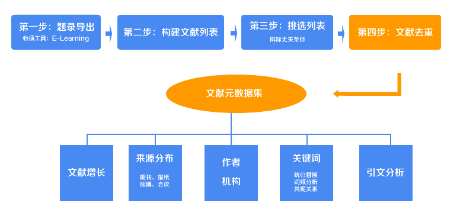
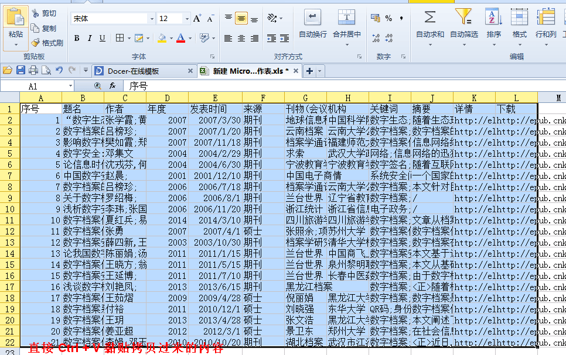

第四步：文献去重

在上一步中，你已经获得了一个包含了经过挑选的文献条目的txt文件（如果是直接下载的话，它的名字为documents_meta_data.txt），接下来，你将使用本步骤的工具去除重复的条目（标题相同，作者相同，发表日期相同，期刊相同）。经过挑选之后，保留下来的文献条目将没有重复的，能够如实的反映研究的情况。下面按照提示进行操作吧。
打开上述的txt文件，你看到的是经过上一步处理好的条目格式（如下图），通过键盘上的“Ctrl+A”全选所有内容，“Ctrl+C”拷贝它，然后黏贴到下面的文本框中。

复制好了吗？把复制好的内容黏贴到下面的文本框中。黏贴的时候如果你的内容极其多，很有可能出现浏览器假死的现象，所以稍微等一下（推荐使用firefox、chrome等浏览器，不推荐IE浏览器）。不要急着点提交按钮，继续往下看。
勾选“直接下载txt结果”前的选项的话，点击提交后会直接提示下载一个txt文档，如果不勾选，提交后会把处理好的数据直接显示在网页中。
这里推荐勾选，因为即使你不勾选，后面也要把结果数据先拷贝到一个txt文件中。（为什么不直接下载excel文档呢？因为不同的服务器处理后文件格式不一样，excel下载以后可能出现乱码，因此使用txt比较保险。况且，我们下一步中还要使用这个txt。）
不勾选“直接下载txt”的情况下（勾选了的不必要看这一段），点击提交，会打开显示了处理结果数据的网页。再次使用“Ctrl+A => Ctrl+C”拷贝整个网页的内容。在你的电脑桌面新建一个.txt文档，打开后把拷贝的内容黏贴在里面。
如果勾选了下载txt的选项，那么会下载一个documents_meta_data.txt，里面保存了经过处理的数据。将它打开，你可以看到每行一条文献，第一列是序号。没错，这就是我们处理过后的一个标准格式，（如下图）这个txt文件我们会在下一步用到，把它放在方便的位置。接下来，我们需要把它拷贝黏贴到Excel表格中。打开这个txt，Ctrl+A全选，Ctrl+C复制，新建一个excel表格，打开，Ctrl+V黏贴，这样就获得了我们最终需要的Excel表格。



通过上面的这几个步骤，你就拿到了我们需要的txt文档。注意：这个txt文档和excel表格文档是我们接下来进行分析的数据依据，请将它们存放在比较合适的位置。这就包含了我们的文献元数据集，请妥善保管它。